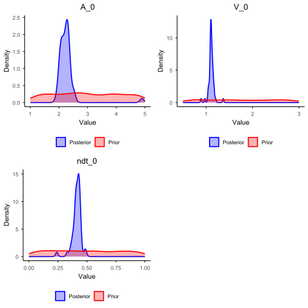
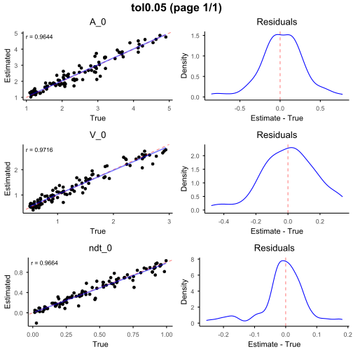
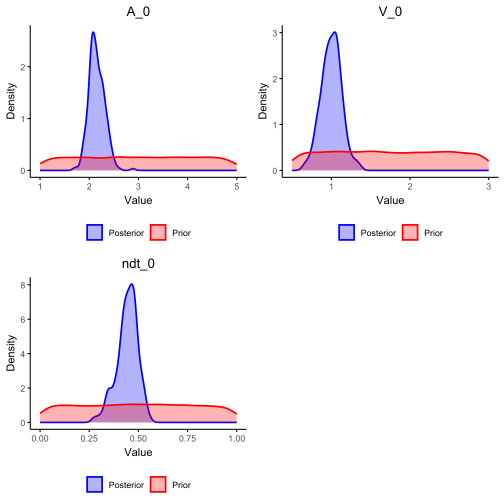
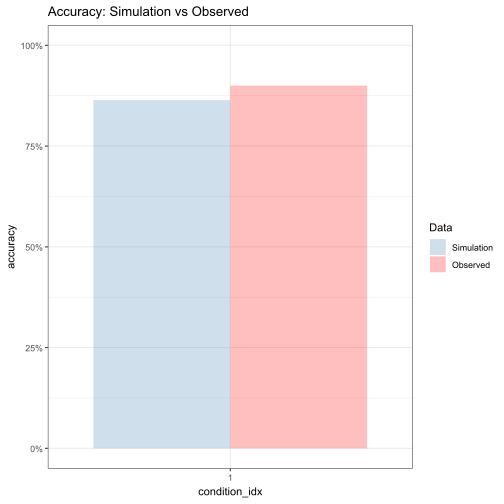
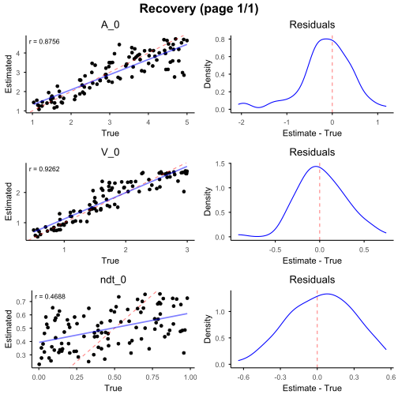
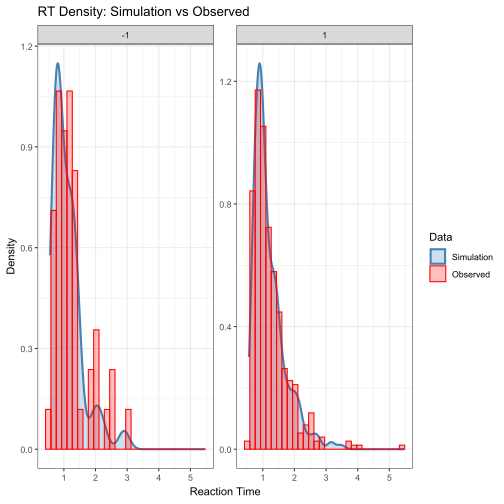
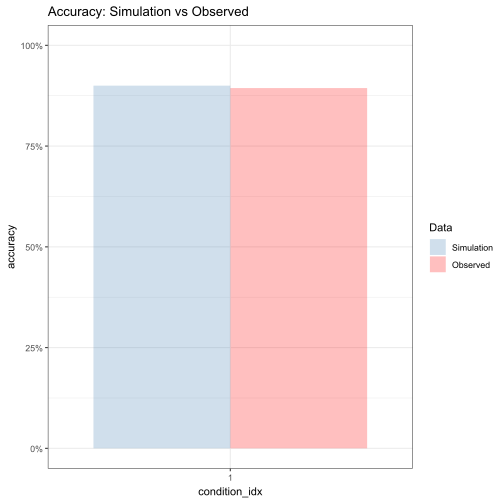
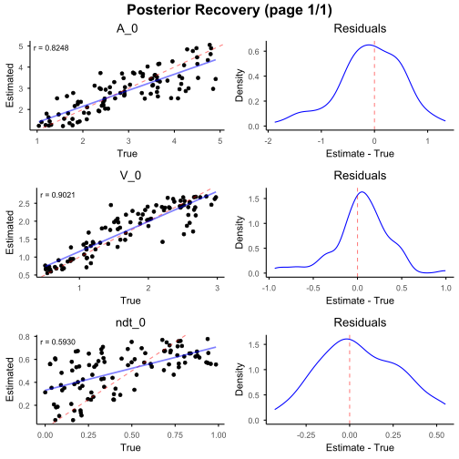
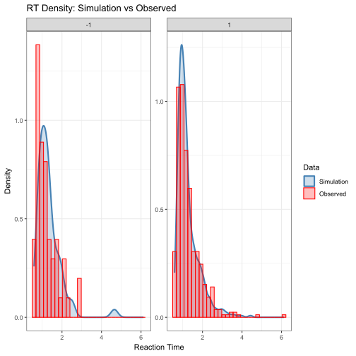
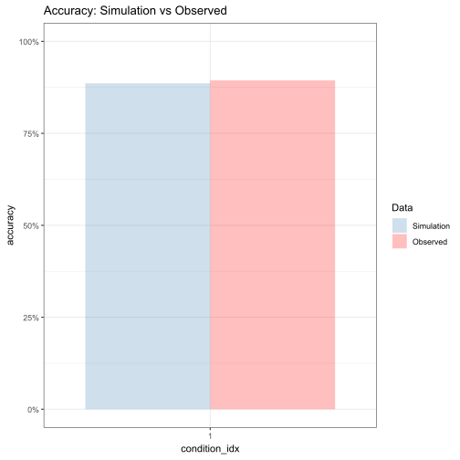

Getting Started: A Minimal Working Example
Guangyu Zhu
Source:vignettes/10-minimal-working-example.Rmd
10-minimal-working-example.RmdThis section aims to help you grasp the basic workflow to run this package. In this section, we will outline the main functionality of the package and demonstrating a minimal working example that can be run with minimal knowledge about EAMs.
The workflow implemented in eam follows the standard workflow in simulation-based inference. First, we begin by specifying a data-generating process, simulate data under a range of parameter values, and then use simulation-based inference to learn which parameters are most consistent with the observed data.
Concretely, the workflow consists of four steps:
- Model specification and simulation: Define an evidence accumulation model by specifying its structural components (boundaries, drift, noise, and non-decision processes), and simulate synthetic datasets from the prior.
- Summary statistics computation: Reduce both simulated and observed data to informative summary statistics that capture key data patterns.
- Parameter estimation and recovery: Use ABC (or ABI) to infer posterior distributions over parameters, and evaluate whether the inference procedure can reliably recover known parameters.
- Model evaluation and comparison: Assess model adequacy using posterior predictive checks, and compare alternative model specifications.
The following sections walk through these steps in detail using a simple DDM example, before extending the workflow to more complex models.
In this example, we start with a simple three-parameter two-boundary Diffusion Decision Model (DDM).
Although the DDM has a trackable likelihood, we deliberately treat it as a generative model here. This allows us to demonstrate the full simulation-based workflow in a setting where the ground truth is known.
Here, we adopt a slightly different parameterization from the conventional DDM: instead of assuming accumulation from a positive starting point toward 0 or , evidence is initialized at zero and evolves toward symmetric bounds at and .
Description of the model
The details of this model is listed below:
Priors on global parameters
Item-level parameterization
Evidence accumulation dynamics
A decision is made when first reaches either or , and the observed response time is
Step one: Model setup
First, we load the required packages.
# Load necessary packages
library(eam)
library(dplyr)
library(rtdists)
library(tidyr)
# Set a random seed for reproducibility
set.seed(1)Then, we specify the model configuration according to the setup described above.
#######################
# Model specification #
#######################
# Define the number of accumulators
n_items <- 1
# Set the number of accumulators in the model
prior_params <- tibble(
n_items = n_items
)
# Specify the prior distributions for free parameters
prior_formulas <- list(
# Decision boundary
A_0 ~ distributional::dist_uniform(1, 5),
# Drift rate
V_0 ~ distributional::dist_uniform(0.5, 3),
# Non-decision time
ndt_0 ~ distributional::dist_uniform(0, 1),
# Relative starting point
rho_0 ~ 0.5
)
# Specify the between-trial components (skipped here)
between_trial_formulas <- list()
# Specify the item-level parameters
item_formulas <- list(
# Relative starting point
rho ~ rho_0,
# Decision boundary
A_upper ~ rho * (A_0), # upper
A_lower ~ -rho * (A_0), # lower
# Drift rate
V ~ V_0,
# Non-decision time
ndt ~ ndt_0
)
# Specify the diffusion noise
noise_factory <- function(context) {
function(n, dt) {
rnorm(n, mean = 0, sd = sqrt(dt))
}
}Step two: Data simulation
Once the model is specified, we can proceed to data simulation. The simulation step generates a large collection of synthetic datasets by sampling parameters from their prior distributions and simulating data from the corresponding generative model. Each simulated dataset represents a possible outcome implied by the assumed model.
####################
# Simulation setup #
####################
sim_config <- new_simulation_config(
# Pass the model information
prior_formulas = prior_formulas,
between_trial_formulas = between_trial_formulas,
item_formulas = item_formulas,
# Specify the simulation conditions and number of trials
n_conditions = 1000,
n_trials_per_condition = 100,
# Specify the number of accumulators and the number of recorded accumulators
n_items = n_items,
max_reached = n_items,
# Specify the total elapsed time and time step
max_t = 10,
dt = 0.001,
# Specify the noise structure
noise_mechanism = "add",
noise_factory = noise_factory,
# Specify the model type
model = "ddm-2b",
# Specify the parallel computing settings
parallel = FALSE, # In tutorial, we disable parallelization, but you are encouraged to enable it locally
n_cores = NULL, # When parallel enabled, will use default: detectCores() - 1
rand_seed = NULL # Will use default random seed
)
##################
# Run simulation #
##################
sim_output <- run_simulation(
config = sim_config
)Step three: Load observed data
For observed data, we create a small dataset using the
rtdists package, which provides fast simulators for
standard DDM. Specifically, we simulate N = 500 trials from
a two-boundary DDM with fixed parameters
(,
,
)
where
controls boundary separation,
is the drift rate, and
captures non-decision time.
The function rdiffusion() returns response labels
("upper"/"lower") and response times. For
consistency with the data format produced by our simulation engine, we
recode responses into a numeric choice variable (1 for the upper
boundary and -1 for the lower boundary), and we add a
condition_idx field to indicate that all trials belong to a
single experimental condition.
############################
# Observed data generation #
############################
N <- 500
pars <- list(
a = 2.0, # Decision boundary
v = 1.0, # Drift rate
t0 = 0.5 # Non-decision time
)
# rdiffusion() will return responses and RTs from a standard DDM
observed_data <- rdiffusion(n = N, a = pars$a, v = pars$v, t0 = pars$t0)
# Recode the data to be consistent with simulated data
observed_data$choice <- ifelse(observed_data$response == "upper", 1, -1)
observed_data$condition_idx <- 1Approximate Bayesian Computation Pipleline
Step four: Extract summary statistics
We define a summary pipeline that extracts two types of common summary statistics of the DDM data: (i) the accuracy and (ii) RT quantiles (10%, 30%, 50%, 70%, 90%) computed separately for each choice category (1 vs. -1).
We then apply the same summary procedure to every simulated dataset
to obtain simulation_sumstat, and to the observed dataset
to obtain target_sumstat. Finally,
build_abc_input() aligns the simulated and observed
summaries into a consistent structure.
#####################
# abc model prepare #
#####################
# Define the summary procedure
summary_pipe <-
summarise_by(
.by = c("condition_idx"),
acc = sum(choice == 1) / sum(!is.na(choice)),
) +
summarise_by(
.by = c("condition_idx", "choice"),
rt_quantiles = quantile(rt, probs = c(0.1, 0.3, 0.5, 0.7, 0.9))
)
# Calculate simulated summary statistics
simulation_sumstat <- map_by_condition(
sim_output,
.progress = TRUE,
.parallel = FALSE, # turn on if you want to speed up
function(cond_df) summary_pipe(cond_df)
)
# Calculate observed summary statistics
target_sumstat <- summary_pipe(observed_data)
# Align the simulated and observed summary statistics
abc_input <- build_abc_input(
simulation_output = sim_output,
simulation_summary = simulation_sumstat,
target_summary = target_sumstat,
param = c("A_0", "V_0", "ndt_0")
)Step five: Fit the model
With the simulated and observed summary statistics aligned, we can now estimate the posterior distribution of the model parameters using Approximate Bayesian Computation (ABC).
Specifically, we fit an ABC model by comparing the simulated summary
statistics to the observed summary statistics. Then we retain (or
reweight) parameter draws that best reproduce the observed summaries
under a tolerance level (tol = 0.05).
Here we use a regression-based-adjusted ABC variant
(method = "loclinear"), which learns a flexible mapping
from summary statistics to parameters to improve posterior
approximation.
These diagnostics help verify whether the posterior concentrates on
plausible regions of the parameter space and whether the recovered
parameters are consistent with the parameters in the
rdiffusion() model.
########################
# Parameter estimation #
########################
# Fit abc model (neuralnet)
abc_fit <- abc::abc(
target = abc_input$target,
param = abc_input$param,
sumstat= abc_input$sumstat,
tol = 0.05,
method = "loclinear"
)
#> Warning: All parameters are "none" transformed.After fitting, we summarize the posterior means/medians and 95% credible intervals and visualize the resulting posterior distributions.
As shown, the true parameter values underlying the observed data lie well within the 95% credible intervals of the posterior distributions.
# Posterior estimation check
summarise_posterior_parameters(
abc_fit,
ci_level = 0.95
)
#> parameter mean median ci_lower_0.025 ci_upper_0.975
#> 1 A_0 2.2699966 2.2522988 1.9978171 2.5227772
#> 2 V_0 1.1104511 1.1080758 0.9895468 1.1966138
#> 3 ndt_0 0.4130898 0.4182996 0.3370902 0.4748187
plot_posterior_parameters(
abc_fit,
abc_input
)
Step six: Model evaluation
The next step is to evaluate parameter recovery for the model. To do
so, we run cv4abc() as a cross-validation procedure.
First, we specify the number of validation datasets
(N = 100). The function then randomly samples
N conditions from the simulated summary statistics, treats
their associated parameter values as known ground truth, and
re-estimates the parameters using the fitted ABC object under the same
tolerance level.
Recovery performance is visualized using
plot_cv_recovery(), which compares the estimated parameters
with their true values across validation datasets.
Good recovery is indicated by a high correlation between estimated and true parameters (good: ; excellent: ) and by estimates clustering closely around the identity line with minimal residual dispersion.
The resid_tol option trims extreme residuals (here
retaining the central 99%), making the main recovery pattern easier to
inspect.
As shown, the three parameters exhibit excellent recovery.
# Parameter recovery check
abc_cv <- abc_cv(
abc_input = abc_input,
abc_result = abc_fit,
nval = 100,
tols = c(0.05)
)
plot_cv_recovery(
abc_cv,
n_rows = 3,
n_cols = 1,
resid_tol = 0.99,
interactive = FALSE
)
As a final diagnostic, we perform a posterior predictive check to assess the adequacy of the fitted model.
Specifically, we generate the posterior data using posterior median estimates obtained from the ABC analysis. The resulting posterior predictive simulations are then compared with the observed dataset.
By visually inspecting the overlap between simulated and observed RT distributions and accuracy rates, we can evaluate whether the fitted model is able to reproduce key empirical patterns.
##############################
# Posterior predictive check #
##############################
abc_posterior_predictive_check(
config = sim_config, # Simulation configuration
abc_result = abc_fit, # ABC fitting result
observed_df = observed_data, # Observed dataset for comparison
n_conditions = 1, # Number of experimental conditions
n_trials_per_condition = 500, # Number of trials simulated per condition
rt_facet_x = c("choice"), # RT plot facet (x)
rt_facet_y = c(), # RT plot facet (y)
accuracy_x = "rank_idx", # Accuracy plot x-axis variable
accuracy_facet_x = c(), # Accuracy plot facet (x)
accuracy_facet_y = c() # Accuracy plot facet (y)
)

Step seven (optional): Model comparison
Beyond parameter estimation, the eam package also supports model comparison within a simulation-based inference framework.
In this example, we construct an alternative model by deliberately modifying the prior specification of the relative starting point parameter , while keeping all other components of the model unchanged. This allows us to isolate the contribution of this parameter assumption to overall model fit. Synthetic data are then generated under the alternative model, and the same summary statistics pipeline is applied to ensure comparability across models.
Model comparison is conducted using the abc_postpr()
function, which estimates posterior model probabilities based on
Approximate Bayesian Computation. Intuitively, this procedure assesses
which model is more likely to have generated the observed data by
comparing the proximity of simulated summary statistics from each model
to the target summary statistics, given a fixed tolerance level.
The resulting posterior probabilities indicate the relative likelihood that the observed data were generated by each candidate model. These probabilities can be summarized using Bayes factors, which quantify the strength of evidence in favor of one model over another. Conventionally, Bayes factors greater than 3 or smaller than 1/3 are interpreted as providing substantial evidence for one model relative to its competitor.
# Deliberately change the rho in the alternative model
prior_formulas_alt <- list(
# Decision boundary
A_0 ~ distributional::dist_uniform(1, 5),
# Drift rate
V_0 ~ distributional::dist_uniform(0.5, 3),
# Non-decision time
ndt_0 ~ distributional::dist_uniform(0, 1),
# Relative starting point
rho_0 ~ 0.7
)
sim_config_alt <- sim_config
sim_config_alt$prior_formulas <- prior_formulas_alt
# Run the simulation
sim_output_alt <- run_simulation(
config = sim_config_alt
)
# Calculate simulated summary statistics for the alternative model
simulation_sumstat_alt <- map_by_condition(
sim_output_alt,
.progress = TRUE,
.parallel = FALSE,
function(cond_df) summary_pipe(cond_df)
)
abc_input_alt <- build_abc_input(
simulation_output = sim_output_alt,
simulation_summary = simulation_sumstat_alt,
target_summary = target_sumstat,
param = c("A_0", "V_0", "ndt_0")
)
# Run the model comparison
postpr_result <- abc_postpr(
sumstats = list(
abc_input$sumstat,
abc_input_alt$sumstat
),
target = abc_input$target,
tol = 0.05,
method = "rejection"
)
summary(postpr_result)
#> Call:
#> abc::postpr(target = target, index = index, sumstat = sumstat,
#> tol = 0.05, method = "rejection")
#> Data:
#> postpr.out$values (100 posterior samples)
#> Models a priori:
#> model_1, model_2
#> Models a posteriori:
#> model_1, model_2
#>
#> Proportion of accepted simulations (rejection):
#> model_1 model_2
#> 0.9 0.1
#>
#> Bayes factors:
#> model_1 model_2
#> model_1 1.0000 9.0000
#> model_2 0.1111 1.0000Amortized Bayesian Inference Pipleline (Point Estimation)
Step four: Prepare input features
We construct the input matrix from the observed data, containing trial-level choice and reaction time (RT).
The same structure is used for both simulated and observed datasets.
The function build_abi_input() then aligns simulated
data and parameters into a consistent format for training.
#####################
# abc model prepare #
#####################
library(dplyr)
library(tidyr)
Z_observed <- observed_data %>%
mutate(trial = row_number()) %>%
select(trial, choice, rt) %>%
pivot_longer(
cols = c(choice, rt),
names_to = "variable",
values_to = "value"
) %>%
pivot_wider(
names_from = trial,
values_from = value
)
Z_observed <- as.matrix(Z_observed[, -1])
Z_observed
# Align the simulated and observed summary statistics
abi_input <- build_abi_input(
sim_output,
theta = c(
"A_0", "V_0", "ndt_0"
),
Z = c(
"choice",
"rt"
),
train_ratio = 0.8,
n_test = 100
)Step five: Fit the model
We train a neural estimator to learn the mapping from observed data to model parameters .
Here we use a point estimator, which directly predicts parameter values from the input data.
The input dimension d = 2 corresponds to the two
observed variables per trial (choice and RT). The DeepSet encoder maps a
set of trials into a fixed-length representation, which is then
transformed into parameter estimates.
The output dimension equals the number of parameters
(p = 3), with each parameter predicted by a dedicated
output unit using a softplus activation to enforce valid (positive)
values.
########################
# Parameter estimation #
########################
# Fit abi model
point_estimator <- "
d = 2 # dimension of data
w = 32 # number of neurons in each hidden layer
# Layer to ensure valid estimates
final_layer = Parallel(
vcat,
Dense(w, 1, softplus), #first parameter
Dense(w, 1, softplus), #second parameter
Dense(w, 1, softplus) #third parameter
)
psi = Chain(Dense(d, w, relu), Dense(w, w, relu), Dense(w, w, relu))
phi = Chain(Dense(w, w, relu), Dense(w, w, relu), final_layer)
deepset = DeepSet(psi, phi)
estimator = PointEstimator(deepset)
"
trained_point_estimator <- abi_train(
estimator = point_estimator,
abi_input = abi_input,
epochs = 100,
stopping_epochs = 20
)After training, we obtain point estimates of the parameters for the observed dataset.
# Point estimation check
point_est <- abi_estimate(
trained_estimator = trained_point_estimator,
Z = Z_observed
)
point_est
#> estimate
#> A_0 1.8943079
#> V_0 1.0716629
#> ndt_0 0.4800706Step six: Model evaluation
We evaluate parameter recovery using simulated datasets.
The function abi_assess() performs a validation
procedure by:
- sampling datasets with known parameters
- re-estimating parameters using the trained estimator
- comparing estimated vs true parameters
Good recovery is indicated by high correlation between estimated and true values estimates concentrated around the identity line
# Parameter recovery check
assessment <- abi_assess(
trained_estimator = trained_point_estimator,
estimator_name = "NBE"
)
#> Running NBE...
plot_cv_recovery(assessment)
We assess model fit by generating simulated data using the estimated parameters and comparing them to the observed data.
This allows us to evaluate whether the model reproduces RT distributions and choice proportions
##############################
# Posterior predictive check #
##############################
abi_posterior_predictive_check(
config = sim_config,
trained_estimator = trained_point_estimator,
estimator_type = "point",
observed_df = observed_data,
Z = Z_observed,
rt_facet_x = c("choice"),
rt_facet_y = c(),
accuracy_x = "",
accuracy_facet_x = c(),
accuracy_facet_y = c()
)

Amortized Bayesian Inference Pipleline (Posteiror Sample Estimation)
Step four: Prepare input features
(Same as above)
#####################
# abc model prepare #
#####################
Z_observed <- observed_data %>%
mutate(trial = row_number()) %>%
select(trial, choice, rt) %>%
pivot_longer(
cols = c(choice, rt),
names_to = "variable",
values_to = "value"
) %>%
pivot_wider(
names_from = trial,
values_from = value
)
Z_observed <- as.matrix(Z_observed[, -1])
Z_observed
#> 1 2 3 4 5 6 7 8 9 10 11 12 13 14 15 16 17 18
#> [1,] -1.000000 -1.000000 1.00000 1.0000000 1.000000 1.00000 1.0000000 1.000000 1.000000 1.0000000 1.000000 1.0000000 1.00000 1.000000 1.000000 1.000000 1.0000000 -1.000000
#> [2,] 2.171105 2.874676 1.44698 0.8864481 2.104167 1.33265 0.6388183 1.321551 1.614517 0.7877165 1.164669 0.9488214 1.19743 2.197525 1.281529 1.478063 0.8485673 1.444674
#> 19 20 21 22 23 24 25 26 27 28 29 30 31 32 33 34 35 36
#> [1,] 1.000000 1.00000 1.0000000 -1.000000 1.0000000 1.0000000 1.000000 1.000000 1.0000000 1.0000000 1.0000000 1.0000000 1.000000 1.000000 1.000000 -1.000000 1.000000 1.000000
#> [2,] 1.177508 1.28913 0.8735773 1.376117 0.9266239 0.7257632 1.024721 1.133488 0.9487213 0.9283505 0.9354072 0.8800024 1.808904 1.053198 1.056073 1.129841 1.827052 1.497014
#> 37 38 39 40 41 42 43 44 45 46 47 48 49 50 51 52 53 54
#> [1,] 1.000000 1.0000000 1.000000 1.000000 1.0000000 1.000000 1.000000 -1.0000000 1.0000000 1.000000 1.0000000 1.00000 1.0000000 1.0000000 1.000000 1.0000000 1.00000 1.000000
#> [2,] 1.396684 0.8734456 1.280448 1.188907 0.7834405 1.435677 1.175416 0.6914361 0.9424297 1.421005 0.7228091 2.26064 0.9909233 0.7132939 1.560829 0.7846147 1.20881 1.027558
#> 55 56 57 58 59 60 61 62 63 64 65 66 67 68 69 70 71 72
#> [1,] 1.000000 1.000000 1.000000 1.000000 1.000000 1.000000 1.000000 1.000000 1.0000 1.0000000 1.000000 -1.00000 1.000000 -1.000000 1.0000000 1.000000 1.000000 1.000000
#> [2,] 1.144491 1.394592 1.090286 1.542756 2.785503 1.710847 0.689834 1.833253 1.0741 0.7449658 1.613473 1.04188 1.601041 1.772935 0.6690262 1.154254 1.698059 1.331169
#> 73 74 75 76 77 78 79 80 81 82 83 84 85 86 87 88 89 90
#> [1,] -1.00000 1.00000 1.0000000 1.0000000 1.000000 1.000000 1.000000 1.00000 1.000000 1.0000000 -1.000000 1.000000 1.000000 -1.0000000 1.000000 1.0000000 1.000000 1.000000
#> [2,] 1.78418 2.47989 0.6441206 0.6794174 2.486648 1.379806 1.919547 1.88357 1.362574 0.9551419 1.707419 1.061504 1.679752 0.9527299 1.929886 0.8376262 1.276849 1.849208
#> 91 92 93 94 95 96 97 98 99 100 101 102 103 104 105 106 107 108
#> [1,] 1.000000 1.0000000 -1.000000 1.000000 1.00000 1.000000 1.0000000 1.0000000 1.0000000 1.0000000 1.00000 1.000000 1.00000 1.000000 1.000000 1.000000 1.0000000 1.000000
#> [2,] 1.101254 0.6405702 1.011246 1.026176 1.54184 1.145256 0.6916204 0.9331501 0.7351867 0.9923604 2.53258 1.655325 2.00114 1.023542 2.099968 1.903528 0.9713177 2.103198
#> 109 110 111 112 113 114 115 116 117 118 119 120 121 122 123 124 125
#> [1,] 1.000000 1.0000000 1.000000 1.0000000 -1.000000 1.000000 -1.0000000 1.0000000 1.000000 1.0000000 1.0000000 1.0000000 1.000000 1.000000 1.0000000 1.000000 1.000000
#> [2,] 2.449127 0.7708309 3.065289 0.6519502 1.064743 1.377894 0.9729573 0.8147972 1.038793 0.8746318 0.8873199 0.7393402 1.229818 1.053337 0.6293164 1.667285 2.764431
#> 126 127 128 129 130 131 132 133 134 135 136 137 138 139 140 141 142 143
#> [1,] 1.000000 1.000000 1.00000 -1.000000 1.0000000 1.0000000 1.000000 1.000000 1.000000 1.000000 1.0000000 1.000000 1.000000 1.000000 1.0000000 1.000000 1.0000000 -1.0000000
#> [2,] 2.311841 1.578316 1.33598 1.778064 0.7161018 0.7538894 1.367332 2.740091 1.549038 1.689145 0.9247032 1.170792 1.058673 1.975783 0.7590616 1.032626 0.9819436 0.6598818
#> 144 145 146 147 148 149 150 151 152 153 154 155 156 157 158 159 160 161
#> [1,] 1.000000 -1.000000 1.000000 1.000000 1.000000 1.000000 1.00000 1.0000000 1.000000 1.000000 1.000000 1.000000 1.0000000 1.000000 -1.000000 1.000000 1.0000000 1.000000
#> [2,] 1.284501 1.032159 1.240627 1.167132 0.892737 1.264202 2.38195 0.8716598 0.640808 1.032892 2.845445 1.456882 0.8551658 2.294695 1.255088 2.408252 0.9186813 1.281062
#> 162 163 164 165 166 167 168 169 170 171 172 173 174 175 176 177 178 179
#> [1,] 1.000000 1.000000 1.000000 -1.000000 1.0000000 1.000000 1.000000 1.000000 1.000000 1.000000 1.0000000 1.000000 1.000000 1.0000000 1.0000000 1.0000000 1.000000 1.000000
#> [2,] 1.333723 1.324158 1.285586 1.385572 0.8907498 2.140454 1.101117 1.127781 2.016101 1.754016 0.5877378 1.562053 2.404201 0.7844429 0.8287129 0.6761349 1.081599 3.912172
#> 180 181 182 183 184 185 186 187 188 189 190 191 192 193 194 195 196
#> [1,] 1.0000000 -1.000000 1.0000000 1.000000 1.0000000 1.000000 1.0000000 1.000000 1.0000000 1.0000000 1.000000 1.0000000 1.000000 1.0000000 1.000000 1.000000 1.000000
#> [2,] 0.7510748 1.564603 0.6625367 2.455425 0.7986929 2.407532 0.6606578 0.807257 0.9885072 0.6464956 1.091372 0.8836803 2.196935 0.9983479 2.151196 1.012072 1.557134
#> 197 198 199 200 201 202 203 204 205 206 207 208 209 210 211 212 213 214
#> [1,] 1.0000000 1.000000 1.0000000 1.0000000 1.000000 1.000000 1.0000000 1.000000 1.0000000 1.00000 1.000000 -1.0000000 1.000000 1.0000000 1.0000000 1.000000 1.000000 -1.000000
#> [2,] 0.8634909 1.160625 0.9217073 0.7398062 1.272722 1.282197 0.7214134 1.092846 0.8815712 1.46154 0.969916 0.7506519 3.548463 0.9084313 0.6935972 1.740247 1.263457 2.879552
#> 215 216 217 218 219 220 221 222 223 224 225 226 227 228 229 230 231 232
#> [1,] 1.00000 1.000000 -1.000000 1.000000 -1.00000 -1.000000 1.000000 1.000000 1.00000 1.000000 1.000000 1.000000 1.000000 1.000000 1.000000 1.000000 1.000000 1.0000000
#> [2,] 1.01567 2.078707 1.187146 1.203234 1.13311 2.069356 1.393215 1.760605 1.47562 1.414235 1.485232 1.399999 1.160262 2.019206 1.049536 1.765198 1.109654 0.8463151
#> 233 234 235 236 237 238 239 240 241 242 243 244 245 246 247 248 249 250
#> [1,] 1.000000 1.0000000 1.000000 1.00000 1.000000 -1.0000000 1.000000 1.0000000 1.000000 1.0000000 -1.0000000 1.000000 1.00000 1.0000000 1.0000000 1.0000000 1.0000000 1.000000
#> [2,] 1.116656 0.9495003 2.014012 1.00382 1.808198 0.6230589 2.221166 0.7887451 0.820566 0.8040881 0.6259442 0.948881 1.11428 0.9692438 0.8186694 0.8688432 0.8744195 1.167972
#> 251 252 253 254 255 256 257 258 259 260 261 262 263 264 265 266 267 268
#> [1,] 1.000000 1.000000 1.000000 1.000000 1.0000000 -1.0000000 1.0000000 1.000000 1.0000 -1.0000000 1.000000 1.000000 1.000000 1.0000000 1.000000 1.0000000 1.0000000 1.000000
#> [2,] 1.382774 1.280165 1.211849 1.232794 0.9439029 0.8707468 0.7674448 1.342896 1.1276 0.9466259 2.177586 1.116866 1.066886 0.8168489 1.187518 0.9507882 0.7283724 1.168839
#> 269 270 271 272 273 274 275 276 277 278 279 280 281 282 283 284 285
#> [1,] 1.00000 1.0000000 1.0000000 1.000000 1.0000000 -1.000000 1.000000 -1.0000000 1.0000000 1.0000000 1.0000000 1.000000 1.0000000 1.0000000 -1.00000 1.000000 1.000000
#> [2,] 1.39417 0.8598649 0.7591527 2.745616 0.6791561 1.269233 1.206282 0.7699126 0.9290608 0.8258111 0.8501713 0.682595 0.7216251 0.8400356 2.13129 1.860337 1.182481
#> 286 287 288 289 290 291 292 293 294 295 296 297 298 299 300 301 302 303
#> [1,] 1.000000 1.000000 1.000000 1.0000000 1.0000000 1.000000 1.0000000 1.000000 1.0000000 1.000000 1.000 1.0000000 1.000000 1.0000000 1.00000 1.0000000 -1.00000 1.0000000
#> [2,] 2.444108 1.157153 2.415481 0.6086982 0.7959772 1.179815 0.9229961 1.412539 0.7180063 1.352101 1.324 0.9578317 1.194554 0.8953829 1.44325 0.9484618 1.51117 0.7367798
#> 304 305 306 307 308 309 310 311 312 313 314 315 316 317 318 319 320 321
#> [1,] 1.000000 1.00000 1.000000 1.0000000 1.00000 1.000000 1.0000000 1.0000000 -1.000000 1.0000000 1.0000000 1.0000000 1.000000 1.000000 1.0000000 1.00000 1.000000 1.0000000
#> [2,] 1.282777 0.93147 1.887203 0.9043405 1.13123 1.246261 0.9256799 0.7245828 1.127903 0.8995528 0.9193974 0.7233379 1.690826 1.088046 0.6770533 1.29428 0.770538 0.7029926
#> 322 323 324 325 326 327 328 329 330 331 332 333 334 335 336 337 338
#> [1,] 1.000000 -1.0000000 1.0000000 1.0000000 1.0000000 1.000000 -1.000000 1.000000 1.000000 1.0000000 1.000000 -1.0000000 1.000000 1.0000000 1.0000000 1.000000 1.000000
#> [2,] 1.350878 0.7846401 0.7381628 0.6859322 0.9523072 1.054655 1.245278 3.512405 1.157403 0.9583143 1.003173 0.6885915 2.059891 0.7801923 0.8408835 1.104157 0.671773
#> 339 340 341 342 343 344 345 346 347 348 349 350 351 352 353 354 355 356
#> [1,] 1.0000000 1.0000000 1.000000 1.000000 1.0000000 1.000000 1.000000 1.000000 1.000000 1.000000 1.000000 1.0000000 1.0000000 1.000000 1.0000000 1.0000000 -1.0000000 1.000000
#> [2,] 0.6246503 0.9978668 1.527861 1.495263 0.7188819 0.961681 1.281087 2.811163 1.710022 4.873104 1.000689 0.6993053 0.8226579 1.767739 0.7198912 0.9097814 0.7937842 1.312871
#> 357 358 359 360 361 362 363 364 365 366 367 368 369 370 371 372 373 374
#> [1,] 1.00000 1.000000 1.000000 1.0000000 1.000000 1.000000 1.000000 1.000000 1.0000000 1.0000000 1.000000 1.0000000 1.0000000 1.000000 1.0000000 1.0000000 1.000000 1.000000
#> [2,] 1.85509 1.011745 1.169127 0.7262406 1.671659 1.220343 0.910886 1.952213 0.7327799 0.8989502 1.098039 0.7237378 0.8704998 3.401873 0.8084441 0.9822333 1.206652 1.404113
#> 375 376 377 378 379 380 381 382 383 384 385 386 387 388 389 390 391 392
#> [1,] 1.000000 1.000000 1.000000 1.000000 1.0000000 1.0000000 1.0000000 1.000000 1.000000 1.000000 1.000000 1.0000000 -1.0000000 1.000000 1.000000 1.000000 1.000000 -1.000000
#> [2,] 1.354496 1.793682 1.026665 0.948196 0.7591575 0.9620569 0.8800904 1.663455 1.418435 1.967878 1.739268 0.7007601 0.6403291 1.504143 1.086382 1.055498 1.323515 1.189111
#> 393 394 395 396 397 398 399 400 401 402 403 404 405 406 407 408 409 410
#> [1,] 1.000000 1.0000000 1.0000000 -1.0000000 -1.0000000 1.000000 1.000000 1.000000 1.0000000 1.000000 1.0000000 1.000000 1.000000 1.0000000 1.00000 1.000000 1.0000000 1.000000
#> [2,] 1.304705 0.6866777 0.7719847 0.8991733 0.7268541 0.954504 2.409572 3.667136 0.9494891 1.348096 0.8591081 1.001898 1.514299 0.8447454 2.17236 1.374693 0.6429888 1.689681
#> 411 412 413 414 415 416 417 418 419 420 421 422 423 424 425 426 427 428
#> [1,] 1.0000000 1.000000 1.000000 1.000000 -1.0000000 1.0000000 1.000000 1.000000 1.000000 1.0000000 1.0000000 -1.000000 1.000000 1.000000 1.00000 1.000000 1.000000 1.0000000
#> [2,] 0.8353193 1.006846 2.255397 1.226885 0.8733312 0.9386368 6.125813 2.095148 2.025008 0.6939201 0.7988952 2.226658 3.334596 1.144079 1.11965 1.988281 2.475565 0.7577963
#> 429 430 431 432 433 434 435 436 437 438 439 440 441 442 443 444 445 446
#> [1,] 1.000000 1.000000 1.000000 1.000000 1.000000 -1.0000000 1.000000 1.000000 1.000000 1.0000 1.000000 1.000000 1.0000000 -1.0000000 1.0000000 1.000000 1.0000000 1.000000
#> [2,] 0.670837 1.644549 2.341194 1.220665 1.881162 0.7393318 1.527224 1.384478 1.725954 1.6105 1.140011 1.104968 0.6663688 0.8058028 0.8065822 1.507353 0.8804365 0.819616
#> 447 448 449 450 451 452 453 454 455 456 457 458 459 460 461 462 463 464
#> [1,] 1.0000000 1.0000000 1.0000000 1.0000000 1.000000 1.000000 1.0000000 1.00000 1.0000000 1.000000 -1.000000 1.000000 1.000000 1.0000000 1.000000 1.0000000 1.000000 1.000000
#> [2,] 0.9863109 0.8416264 0.7088332 0.9078987 1.202899 1.349974 0.9713308 1.14443 0.6104773 1.586141 1.989642 1.143576 1.106855 0.6553859 1.113811 0.8540619 2.247459 1.116734
#> 465 466 467 468 469 470 471 472 473 474 475 476 477 478 479 480 481
#> [1,] 1.000000 1.000000 1.000000 -1.0000000 1.000000 1.0000000 1.0000000 1.000000 1.000000 1.000000 1.000000 1.0000000 -1.0000000 1.000000 1.0000000 1.0000000 -1.0000000
#> [2,] 1.141253 2.003553 1.047106 0.7945936 1.690737 0.7012102 0.8670147 1.933902 1.725109 0.822506 1.557583 0.8392137 0.7639521 1.035096 0.7755938 0.7584468 0.7407887
#> 482 483 484 485 486 487 488 489 490 491 492 493 494 495 496 497 498
#> [1,] 1.0000000 1.0000000 -1.000000 -1.000000 1.000000 1.000000 1.0000000 1.000000 1.000000 1.0000000 1.0000000 1.0000000 1.000000 1.000000 1.000000 1.0000000 1.000000
#> [2,] 0.6044737 0.7125738 1.469313 1.050444 1.215092 1.893114 0.6049086 1.145198 1.733569 0.9138159 0.8729534 0.7427295 1.010904 1.009906 0.873269 0.9532307 1.025469
#> 499 500
#> [1,] -1.000000 1.000000
#> [2,] 1.174725 1.471836
# Align the simulated and observed summary statistics
abi_input <- build_abi_input(
sim_output,
theta = c(
"A_0", "V_0", "ndt_0"
),
Z = c(
"choice",
"rt"
),
train_ratio = 0.8,
n_test = 100
)Step five: Fit the model
Instead of predicting a single point estimate, we learn the full posterior distribution.
The input dimension d = 2 corresponds to the two
observed variables per trial (choice and RT).
The DeepSet encoder maps a set of trials into a fixed-length representation.
The output dimension equals the number of parameters
(p = 3).
Instead of producing point estimates, a normalizing flow is used to generate samples from the posterior distribution over parameters.
########################
# Parameter estimation #
########################
# Fit abi model
posterior_estimator <- "
d = 2 # dimension of each replicate
w = 32 # number of neurons in each hidden layer
# Layer to ensure valid estimates
final_layer = Parallel(
vcat,
Dense(w, 1, softplus),
Dense(w, 1, softplus),
Dense(w, 1, softplus)
)
psi = Chain(Dense(d, w, relu), Dense(w, w, relu), Dense(w, w, relu))
phi = Chain(Dense(w, w, relu), Dense(w, w, relu), final_layer)
deepset = DeepSet(psi, phi)
w = 3
q = NormalisingFlow(w, w)
estimator = PosteriorEstimator(q, deepset)
"
trained_posterior_estimator <- abi_train(
estimator = posterior_estimator,
abi_input = abi_input,
epochs = 100,
stopping_epochs = 20
)
#> Computing the initial validation risk... Initial validation risk = 21.822495
#> Computing the initial training risk... Initial training risk = 21.882341
#> Epoch: 1 Training risk: 5.609 Validation risk: 3.735 Learning rate: 1.00E-03 Epoch time: 33.25 seconds
#> Epoch: 2 Training risk: 3.16 Validation risk: 2.883 Learning rate: 1.00E-03 Epoch time: 0.643 seconds
#> Epoch: 3 Training risk: 2.732 Validation risk: 2.419 Learning rate: 1.00E-03 Epoch time: 1.245 seconds
#> Epoch: 4 Training risk: 1.877 Validation risk: 1.254 Learning rate: 9.99E-04 Epoch time: 0.645 seconds
#> Epoch: 5 Training risk: 1.589 Validation risk: 0.956 Learning rate: 9.98E-04 Epoch time: 1.208 seconds
#> Epoch: 6 Training risk: 0.9 Validation risk: 1.091 Learning rate: 9.96E-04 Epoch time: 0.68 seconds
#> Epoch: 7 Training risk: 0.604 Validation risk: 0.908 Learning rate: 9.94E-04 Epoch time: 0.571 seconds
#> Epoch: 8 Training risk: 0.508 Validation risk: 0.12 Learning rate: 9.91E-04 Epoch time: 1.216 seconds
#> Epoch: 9 Training risk: 0.104 Validation risk: 0.164 Learning rate: 9.88E-04 Epoch time: 0.715 seconds
#> Epoch: 10 Training risk: 0.002 Validation risk: 0.415 Learning rate: 9.84E-04 Epoch time: 0.577 seconds
#> Epoch: 11 Training risk: 0.057 Validation risk: -0.327 Learning rate: 9.80E-04 Epoch time: 1.221 seconds
#> Epoch: 12 Training risk: -0.005 Validation risk: -0.136 Learning rate: 9.76E-04 Epoch time: 0.732 seconds
#> Epoch: 13 Training risk: -0.255 Validation risk: 0.025 Learning rate: 9.70E-04 Epoch time: 0.786 seconds
#> Epoch: 14 Training risk: -0.087 Validation risk: -0.271 Learning rate: 9.65E-04 Epoch time: 0.705 seconds
#> Epoch: 15 Training risk: -0.315 Validation risk: -0.114 Learning rate: 9.59E-04 Epoch time: 1.22 seconds
#> Epoch: 16 Training risk: -0.436 Validation risk: -0.276 Learning rate: 9.52E-04 Epoch time: 0.696 seconds
#> Epoch: 17 Training risk: -0.555 Validation risk: -0.603 Learning rate: 9.46E-04 Epoch time: 0.599 seconds
#> Epoch: 18 Training risk: -0.482 Validation risk: -0.006 Learning rate: 9.38E-04 Epoch time: 1.2 seconds
#> Epoch: 19 Training risk: -0.409 Validation risk: -0.205 Learning rate: 9.30E-04 Epoch time: 0.7 seconds
#> Epoch: 20 Training risk: -0.249 Validation risk: -0.283 Learning rate: 9.22E-04 Epoch time: 0.7 seconds
#> Epoch: 21 Training risk: -0.431 Validation risk: -0.13 Learning rate: 9.14E-04 Epoch time: 0.615 seconds
#> Epoch: 22 Training risk: -0.464 Validation risk: -0.598 Learning rate: 9.05E-04 Epoch time: 1.255 seconds
#> Epoch: 23 Training risk: -0.546 Validation risk: -0.492 Learning rate: 8.95E-04 Epoch time: 0.692 seconds
#> Epoch: 24 Training risk: -0.621 Validation risk: 0.178 Learning rate: 8.85E-04 Epoch time: 0.584 seconds
#> Epoch: 25 Training risk: -0.64 Validation risk: -0.595 Learning rate: 8.75E-04 Epoch time: 0.642 seconds
#> Epoch: 26 Training risk: -0.592 Validation risk: -0.297 Learning rate: 8.64E-04 Epoch time: 0.603 seconds
#> Epoch: 27 Training risk: -0.571 Validation risk: -0.438 Learning rate: 8.54E-04 Epoch time: 1.17 seconds
#> Epoch: 28 Training risk: -0.687 Validation risk: -0.818 Learning rate: 8.42E-04 Epoch time: 0.719 seconds
#> Epoch: 29 Training risk: -0.825 Validation risk: -0.423 Learning rate: 8.31E-04 Epoch time: 0.647 seconds
#> Epoch: 30 Training risk: -0.735 Validation risk: -0.399 Learning rate: 8.19E-04 Epoch time: 0.562 seconds
#> Epoch: 31 Training risk: -0.758 Validation risk: -0.273 Learning rate: 8.06E-04 Epoch time: 1.235 seconds
#> Epoch: 32 Training risk: -0.8 Validation risk: -0.732 Learning rate: 7.94E-04 Epoch time: 0.678 seconds
#> Epoch: 33 Training risk: -0.917 Validation risk: -0.714 Learning rate: 7.81E-04 Epoch time: 0.607 seconds
#> Epoch: 34 Training risk: -0.576 Validation risk: -0.515 Learning rate: 7.68E-04 Epoch time: 0.557 seconds
#> Epoch: 35 Training risk: -0.812 Validation risk: -0.796 Learning rate: 7.55E-04 Epoch time: 1.221 seconds
#> Epoch: 36 Training risk: -0.969 Validation risk: -0.112 Learning rate: 7.41E-04 Epoch time: 0.671 seconds
#> Epoch: 37 Training risk: -0.842 Validation risk: -0.588 Learning rate: 7.27E-04 Epoch time: 0.669 seconds
#> Epoch: 38 Training risk: -1.013 Validation risk: -0.88 Learning rate: 7.13E-04 Epoch time: 0.702 seconds
#> Epoch: 39 Training risk: -0.993 Validation risk: -0.837 Learning rate: 6.99E-04 Epoch time: 0.592 seconds
#> Epoch: 40 Training risk: -1.089 Validation risk: -0.855 Learning rate: 6.84E-04 Epoch time: 1.252 seconds
#> Epoch: 41 Training risk: -1.034 Validation risk: -0.851 Learning rate: 6.69E-04 Epoch time: 0.7 seconds
#> Epoch: 42 Training risk: -1.03 Validation risk: -0.883 Learning rate: 6.55E-04 Epoch time: 0.679 seconds
#> Epoch: 43 Training risk: -0.953 Validation risk: -0.697 Learning rate: 6.39E-04 Epoch time: 0.621 seconds
#> Epoch: 44 Training risk: -1.064 Validation risk: -0.927 Learning rate: 6.24E-04 Epoch time: 1.327 seconds
#> Epoch: 45 Training risk: -0.975 Validation risk: -0.756 Learning rate: 6.09E-04 Epoch time: 0.803 seconds
#> Epoch: 46 Training risk: -1.087 Validation risk: -0.545 Learning rate: 5.94E-04 Epoch time: 0.756 seconds
#> Epoch: 47 Training risk: -0.929 Validation risk: -0.953 Learning rate: 5.78E-04 Epoch time: 0.851 seconds
#> Epoch: 48 Training risk: -1.034 Validation risk: -0.994 Learning rate: 5.63E-04 Epoch time: 0.716 seconds
#> Epoch: 49 Training risk: -1.124 Validation risk: -1.017 Learning rate: 5.47E-04 Epoch time: 1.452 seconds
#> Epoch: 50 Training risk: -1.11 Validation risk: -0.916 Learning rate: 5.31E-04 Epoch time: 0.842 seconds
#> Epoch: 51 Training risk: -1.072 Validation risk: -1.009 Learning rate: 5.16E-04 Epoch time: 0.768 seconds
#> Epoch: 52 Training risk: -1.073 Validation risk: -0.629 Learning rate: 5.00E-04 Epoch time: 0.739 seconds
#> Epoch: 53 Training risk: -1.098 Validation risk: -0.999 Learning rate: 4.84E-04 Epoch time: 1.447 seconds
#> Epoch: 54 Training risk: -1.14 Validation risk: -0.85 Learning rate: 4.69E-04 Epoch time: 0.788 seconds
#> Epoch: 55 Training risk: -1.034 Validation risk: -0.873 Learning rate: 4.53E-04 Epoch time: 0.774 seconds
#> Epoch: 56 Training risk: -1.17 Validation risk: -0.857 Learning rate: 4.37E-04 Epoch time: 1.306 seconds
#> Epoch: 57 Training risk: -1.164 Validation risk: -0.954 Learning rate: 4.22E-04 Epoch time: 0.81 seconds
#> Epoch: 58 Training risk: -1.233 Validation risk: -0.984 Learning rate: 4.06E-04 Epoch time: 0.751 seconds
#> Epoch: 59 Training risk: -1.323 Validation risk: -0.677 Learning rate: 3.91E-04 Epoch time: 0.701 seconds
#> Epoch: 60 Training risk: -1.298 Validation risk: -1.024 Learning rate: 3.76E-04 Epoch time: 1.374 seconds
#> Epoch: 61 Training risk: -1.225 Validation risk: -1.002 Learning rate: 3.61E-04 Epoch time: 0.854 seconds
#> Epoch: 62 Training risk: -1.267 Validation risk: -0.81 Learning rate: 3.45E-04 Epoch time: 0.725 seconds
#> Epoch: 63 Training risk: -1.276 Validation risk: -1.072 Learning rate: 3.31E-04 Epoch time: 1.301 seconds
#> Epoch: 64 Training risk: -1.322 Validation risk: -0.997 Learning rate: 3.16E-04 Epoch time: 0.835 seconds
#> Epoch: 65 Training risk: -1.305 Validation risk: -0.946 Learning rate: 3.01E-04 Epoch time: 0.742 seconds
#> Epoch: 66 Training risk: -1.298 Validation risk: -0.987 Learning rate: 2.87E-04 Epoch time: 0.677 seconds
#> Epoch: 67 Training risk: -1.241 Validation risk: -1.054 Learning rate: 2.73E-04 Epoch time: 1.382 seconds
#> Epoch: 68 Training risk: -1.402 Validation risk: -1.045 Learning rate: 2.59E-04 Epoch time: 0.833 seconds
#> Epoch: 69 Training risk: -1.436 Validation risk: -0.911 Learning rate: 2.45E-04 Epoch time: 0.678 seconds
#> Epoch: 70 Training risk: -1.393 Validation risk: -0.718 Learning rate: 2.32E-04 Epoch time: 1.339 seconds
#> Epoch: 71 Training risk: -1.386 Validation risk: -0.981 Learning rate: 2.19E-04 Epoch time: 0.833 seconds
#> Epoch: 72 Training risk: -1.384 Validation risk: -1.099 Learning rate: 2.06E-04 Epoch time: 0.795 seconds
#> Epoch: 73 Training risk: -1.378 Validation risk: -0.95 Learning rate: 1.94E-04 Epoch time: 0.785 seconds
#> Epoch: 74 Training risk: -1.462 Validation risk: -1.022 Learning rate: 1.81E-04 Epoch time: 1.494 seconds
#> Epoch: 75 Training risk: -1.439 Validation risk: -0.782 Learning rate: 1.69E-04 Epoch time: 0.866 seconds
#> Epoch: 76 Training risk: -1.449 Validation risk: -1.05 Learning rate: 1.58E-04 Epoch time: 0.761 seconds
#> Epoch: 77 Training risk: -1.489 Validation risk: -1.011 Learning rate: 1.46E-04 Epoch time: 1.47 seconds
#> Epoch: 78 Training risk: -1.489 Validation risk: -0.966 Learning rate: 1.36E-04 Epoch time: 0.897 seconds
#> Epoch: 79 Training risk: -1.446 Validation risk: -0.861 Learning rate: 1.25E-04 Epoch time: 1.028 seconds
#> Epoch: 80 Training risk: -1.503 Validation risk: -0.933 Learning rate: 1.15E-04 Epoch time: 0.816 seconds
#> Epoch: 81 Training risk: -1.529 Validation risk: -0.963 Learning rate: 1.05E-04 Epoch time: 1.522 seconds
#> Epoch: 82 Training risk: -1.441 Validation risk: -0.996 Learning rate: 9.55E-05 Epoch time: 0.892 seconds
#> Epoch: 83 Training risk: -1.462 Validation risk: -1.103 Learning rate: 8.65E-05 Epoch time: 0.808 seconds
#> Epoch: 84 Training risk: -1.518 Validation risk: -0.807 Learning rate: 7.78E-05 Epoch time: 1.538 seconds
#> Epoch: 85 Training risk: -1.526 Validation risk: -1.063 Learning rate: 6.96E-05 Epoch time: 0.995 seconds
#> Epoch: 86 Training risk: -1.534 Validation risk: -0.902 Learning rate: 6.18E-05 Epoch time: 0.901 seconds
#> Epoch: 87 Training risk: -1.549 Validation risk: -1.066 Learning rate: 5.45E-05 Epoch time: 0.789 seconds
#> Epoch: 88 Training risk: -1.559 Validation risk: -0.93 Learning rate: 4.76E-05 Epoch time: 1.525 seconds
#> Epoch: 89 Training risk: -1.558 Validation risk: -1.038 Learning rate: 4.11E-05 Epoch time: 0.813 seconds
#> Epoch: 90 Training risk: -1.575 Validation risk: -0.91 Learning rate: 3.51E-05 Epoch time: 0.825 seconds
#> Epoch: 91 Training risk: -1.555 Validation risk: -0.88 Learning rate: 2.96E-05 Epoch time: 1.315 seconds
#> Epoch: 92 Training risk: -1.568 Validation risk: -0.958 Learning rate: 2.45E-05 Epoch time: 0.799 seconds
#> Epoch: 93 Training risk: -1.563 Validation risk: -0.935 Learning rate: 1.99E-05 Epoch time: 0.666 seconds
#> Epoch: 94 Training risk: -1.571 Validation risk: -1.079 Learning rate: 1.57E-05 Epoch time: 0.634 seconds
#> Epoch: 95 Training risk: -1.577 Validation risk: -1.111 Learning rate: 1.20E-05 Epoch time: 1.312 seconds
#> Epoch: 96 Training risk: -1.582 Validation risk: -1.013 Learning rate: 8.86E-06 Epoch time: 0.766 seconds
#> Epoch: 97 Training risk: -1.587 Validation risk: -0.887 Learning rate: 6.16E-06 Epoch time: 0.676 seconds
#> Epoch: 98 Training risk: -1.583 Validation risk: -0.924 Learning rate: 3.94E-06 Epoch time: 1.386 seconds
#> Epoch: 99 Training risk: -1.591 Validation risk: -0.97 Learning rate: 2.22E-06 Epoch time: 0.823 seconds
#> Epoch: 100 Training risk: -1.592 Validation risk: -1.009 Learning rate: 9.87E-07 Epoch time: 0.656 secondsAfter training, we draw samples from the posterior distribution.
# Posterior sample estimation check
posterior_samples <- abi_sample_posterior(
trained_estimator = trained_posterior_estimator,
Z = Z_observed,
N = 1000
)
# Summarise posterior parameters
posterior_summary <- summarise_posterior_parameters(posterior_samples)
print(posterior_summary)
#> dataset_id parameter mean median ci_lower_0.025 ci_upper_0.975
#> 1 1 A_0 2.0092152 2.0391990 1.20679900 2.785555
#> 2 1 V_0 1.0858136 1.0312290 0.72511370 1.732454
#> 3 1 ndt_0 0.5056887 0.5168395 0.03210862 0.947208Step six: Model evaluation
We evaluate posterior recovery by comparing median of posteiror samples of parameters with ground truth.
# Parameter recovery check
posterior_samples <- abi_sample_posterior(
trained_estimator = trained_posterior_estimator,
N = 1000
)
plot_cv_recovery(
posterior_samples,
trained_estimator = trained_posterior_estimator
)
We assess model fit by generating simulated data using the median of posteiror samples of parameters and comparing them to the observed data.
This allows us to evaluate whether the model reproduces RT distributions and choice proportions
##############################
# Posterior predictive check #
##############################
abi_posterior_predictive_check(
config = sim_config,
trained_estimator = trained_posterior_estimator,
estimator_type = "posterior",
observed_df = observed_data,
Z = Z_observed,
posterior_dataset_id = 1,
posterior_n_samples = 1000,
rt_facet_x = c("choice"),
rt_facet_y = c(),
accuracy_x = "",
accuracy_facet_x = c(),
accuracy_facet_y = c()
)

This is the end of this example.
This simple DDM example serves as a reference template for the rest of the tutorial. Once this workflow is clear, extending it to more complex models in eam mainly involves modifying the model components, while the overall inference pipeline remains unchanged.